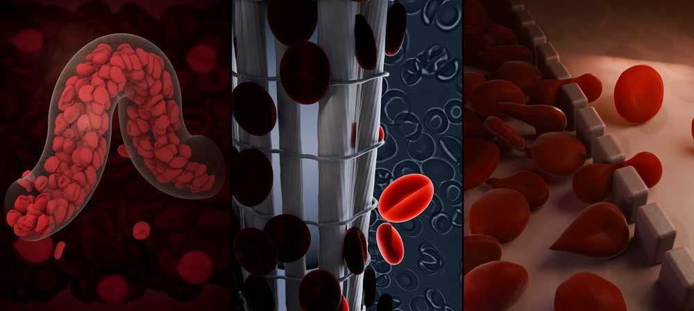

About Me
I am a Postdoctoral Research Associate in the CRUNCH Group, Division of Applied Mathematics at Brown University, working with George Em Karniadakis. I obtained my Ph.D. from the University of Connecticut.
I build particle models of soft and living matter and run them at scale, mostly in LAMMPS. The same family of methods lets me look at quite different problems: how red blood cells change shape and get trapped in disease, how a blood clot breaks apart, how a droplet wets a wall, and how heat spreads through a battery cell. I also work on scientific machine learning and AI agents, which help me fit these models to data and speed them up.
Research Interests
- Molecular dynamics
- Dissipative particle dynamics
- Scientific machine learning
- PINN / DeepONet
- AI agents
- Scientific machine learning: physics-informed neural networks and KANs to infer parameters of cell signaling models; reinforcement learning with particle-based environments; surrogate models trained on particle simulation data.
- AI agents for science: self-improving teams of LLM agents for autonomous discovery and for evolving numerical algorithms (GRAFT-ATHENA).
- Red blood cells in disease: cell shape, stiffness and adhesion in Gaucher disease, hereditary stomatocytosis, sickle cell disease and reticulocytes; filtration through the spleen.
- Blood clots and thrombectomy: fibrin clot mechanics and how a spinning device breaks a clot into debris, with Renee Zhao's group at Stanford.
- Droplets and contact lines: wetting, liquid bridges, moving contact lines and thin-film waves.
- Heat and mass transfer: thermal runaway in lithium-ion cells and transport of chemical species.
News
- [Nov. 2026] Two new preprints on red blood cells in Gaucher disease and echinocytes in a splenic slit.
- [Oct. 2026] Our Gaucher paper is featured in a New and Notable in Biophysical Journal by Elif Dursun and Hanxun Jin.
- [Oct. 2026] George Em Karniadakis shared our three red blood cell papers on LinkedIn.
- [Oct. 2026] Released rbc-dpd-lammps, our red blood cell model for LAMMPS, with a GPU version.
- [Oct. 2026] Two papers accepted in Biophysical Journal, on Gaucher red blood cells and on stomatocytes.
- [Oct. 2026] Paper on macrophage-mediated red blood cell clearance published in PNAS Nexus.
- [Sep. 2025] Paper on blood rheology in Gaucher disease published in PLOS Computational Biology.
Research Highlights

Software
DPD
rbc-dpd-lammps
A red blood cell model for LAMMPS: a triangulated membrane in a DPD solvent, with bounce-back walls and five small examples, from a cell at rest to a cell in a slit.
KOKKOS
rbc-dpd-lammps-gpu
The same red blood cell model on one NVIDIA GPU through the KOKKOS package.
JAX
particlegym
Physics-based particle simulations as fast reinforcement-learning environments in 2D and 3D: crowds, games, swimmers and cells.
PIKAN
Signaling-Biophysical-Framework
Code for the macrophage signaling model in PNAS Nexus (2026): parameter inference with PINNs and PIKANs.
Publications
* denotes equal contribution.
- Receptor abundance alone underpredicts red blood cell adhesion in Gaucher diseasearXiv:2611.27960, 2026
- Stretched bilayer-cytoskeleton links hold echinocytes in a model splenic slitarXiv:2611.16241, 2026
- The typical red cell makes too little vacuole material for coalescence to build the large vacuoles of pocked cellsarXiv:2610.22646, 2026
- Quantifying the biophysical properties of red blood cells in Gaucher diseaseBiophysical Journal, 2026 (in press)
- Quantifying the biophysical properties of stomatocytes in health and diseaseBiophysical Journal, 2026 (in press)
- A multiscale signaling-biophysical framework reveals mechanisms of macrophage-mediated RBC clearance in sickle cell and Gaucher diseasePNAS Nexus 5(10), pgag348, 2026
- Quantifying reticulocyte biomechanics in health and diseasearXiv:2607.21810, 2026
- GRAFT-ATHENA: Self-improving agentic teams for autonomous discovery and evolutionary numerical algorithmsarXiv:2605.11117, 2026
- In silico biophysics and rheology of blood and red blood cells in Gaucher diseasePLOS Computational Biology 21(9), e1012705, 2025
- Dynamics of the axon plasma membrane skeletonSoft Matter 19(14), 2514-2528, 2023
- The periodic axon membrane skeleton leads to Na nanodomains but does not impact action potentialsBiophysical Journal 121(18), 3334-3344, 2022
- Deep reinforcement learning with a particle dynamics environment applied to emergency evacuation of a room with obstaclesPhysica A, 125845, 2021
- A deep reinforcement learning model based on deterministic policy gradient for collective neural crest cell migrationarXiv:2007.03190, 2020
Services
Editorial
- Associate Editor, Journal of Emerging Investigators (during Ph.D.)